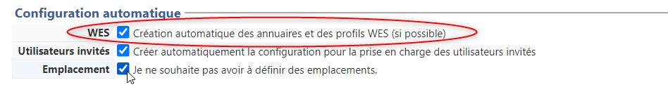

Principes relatifs aux annuaires dans Watchdoc
Prérequis organisationnels
Pour fonctionner, Watchdoc a besoin d'un annuaire utilisateurs. L'annuaire permet de répertorier les différents utilisateurs du système d'information et d'y stocker les informations complémentaires comme l'adresse mail, l'appartenance à des groupes, les droits d'accès etc. L'annuaire permet donc d'établir une politique d’impression en fonction de groupes d’utilisateurs, mais aussi éventuellement d'entités de votre organisation et d'établir des statistiques d'utilisation en fonction de ces groupes et utilisateurs.
Watchdoc s'appuie sur le ou les annuaires qui existent dans l'organisation sans qu'il soit nécessaire de les dupliquer. Si votre organisation dispose d'un annuaire, il convient donc de le configurer, de sorte que Watchdoc puisse y trouver vos utilisateurs.
Si votre organisation ne dispose pas d'annuaire propre, il est possible d'utiliser la base Invités (ou Guests) générée par défaut dans Watchdoc et fondé sur une base de données (SQL Server ou PostgreSQL). Dans le cas où votre organisme dispose d'un annuaire, cet annuaire est exploité en priorité. La base Invités sert alors à inscrire les personnes de passage non-présentes dans l'annuaire de votre organisation et qui ont besoin d'imprimer (cf. Base Invités).
Types et rôles des annuaires
Les annuaires Watchdoc sont de différents types et répondent à des besoins divers :
-
UTILISATEURS : il s'agit de l'annuaire des utilisateurs, reposant sur l'annuaire principal de votre organisation. En règle générale, cet annuaire est renommé du nom de l'organisation ou de l'entité à laquelle il appartient ("DOXENSE" par exemple, dans notre documentation). Dans le cas où l'organisation ne dispose pas d'annuaire, il convient d'utiliser, pour référencer les utilisateurs, de l'annuaire GUESTS propre à Watchdoc, fondé sur une base de données SQL.
-
GUESTS : il s'agit d'un annuaire facultatif créé afin d'inscrire comme utilisateurs de Watchdoc des utilisateurs "invités", c'est-à-dire qui ne sont pas inscrits dans l'annuaire principal de l'organisation. Cet annuaire repose sur la base "Invités" gérée dans WSC (cf. Base Invités).
-
CARDS : il s'agit de l'annuaire dans lequel sont associés les comptes des utilisateurs de Watchdoc et les numéros des badges éventuellement attribués à ces utilisateurs pour débloquer leurs impressions. Cet annuaire de correspondances n'est donc utile que dans le cas où Watchdoc fonctionne en mode Validation
 Internet Message Access Protocol est un protocole qui permet d'accéder à ses courriers électroniques directement sur les serveurs de messagerie.
Son fonctionnement est donc à l'opposé de POP qui, lui, récupère les messages (depuis le poste de travail) et les stocke localement via un logiciel spécialisé (par défaut, les clients de ce dernier protocole suppriment sur le serveur les messages récupérés). L'évolution des différentes versions d'IMAP (IMAP 4) lui permettent également, aujourd'hui, de récupérer les messages localement.
Le fait que les messages soient archivés sur le serveur fait que l'utilisateur peut y accéder depuis n'importe où sur le réseau et que l'administrateur peut facilement faire des copies de sauvegarde.
(Source : wikipedia), avec lecteur de badge installé sur le périphérique d'impression.
Internet Message Access Protocol est un protocole qui permet d'accéder à ses courriers électroniques directement sur les serveurs de messagerie.
Son fonctionnement est donc à l'opposé de POP qui, lui, récupère les messages (depuis le poste de travail) et les stocke localement via un logiciel spécialisé (par défaut, les clients de ce dernier protocole suppriment sur le serveur les messages récupérés). L'évolution des différentes versions d'IMAP (IMAP 4) lui permettent également, aujourd'hui, de récupérer les messages localement.
Le fait que les messages soient archivés sur le serveur fait que l'utilisateur peut y accéder depuis n'importe où sur le réseau et que l'administrateur peut facilement faire des copies de sauvegarde.
(Source : wikipedia), avec lecteur de badge installé sur le périphérique d'impression.La première utilisation s'appelle l'enrôlement
Action au cours de laquelle un compte utilisateur est associé au numéro de badge qui lui appartient. L'enrôlement est réalisé lors de la première utilisation d'un badge. L'enrôlement peut être réalisé par le responsable informatique lorsqu'il délivre le badge à un utilisateur ou par l'utilisateur lui-même qui saisit son identifiant (code PIN, code PUK ou identifiant et mot de passe) qui est alors associé à son numéro de badge. Une fois l'enrôlement réalisé, le numéro de badge est associé définitivement à son propriétaire.. L'association utilisateur / n° de badge est enregistrée dans l'annuaire CARDS.
-
META : il s'agit d'un annuaire virtuel regroupant l'ensemble des autres annuaires déclarés dans Watchdoc. Son rôle est de faciliter la recherche d'un utilisateur dans l'ensemble des annuaires utilisés par Watchdoc. L'annuaire META est installé par défaut, même s'il n'existe qu'un seul annuaire "Utilisateurs" déclaré. Cette installation préventive permet de faciliter la gestion d'un autre annuaire qui serait déclaré ultérieurement.
En règle générale, c'est l'annuaire META qui est configuré comme l'annuaire par défaut.
-
CODE PUK : il s'agit d'un annuaire (reposant sur une table SQL) dans lequel sont enregistrés les codes PUK des utilisateurs référencés dans un annuaire MS Entra ID principalement. Mais cet annuaire peut également être utilisé pour enregitrer les codes PUK d'utilisateurs enregistrés dans un annuaire autre que MS entra ID.
Lors de l'installation et de la configuration initiale de Watchdoc, si vous avez coché la case "WES : Création automatique des annuaires et des instances WES" dans la section Configuration automatique, tous les annuaires de Watchdoc (Users (LDAP), Meta, Cards, Code PUK et/ou utilisateurs invités (Guests)) sont automatiquement créés, que vous en ayez besoin ou non.

Par défaut, Watchdoc conserve en mémoire (cache) les informations de l'annuaire relatives aux utilisateurs. Il évite ainsi de solliciter trop fréquemment l'annuaire et continue de fonctionner normalement, même en cas de panne de l’annuaire.
Les informations SQL, elles, peuvent être stockées dans un tampon local ou sur le serveur d’impression afin de parer à une défaillance du serveur SQL.
Annuaires supportés
-
Microsoft Azure Active Directory
-
Microsoft Active Directory
-
Open LDAP (après validation du schéma)
-
Base SQL
-
Fichier XML
-
Annuaire proxy : il est utilisé pour établir des correspondances (entre le numéro de badge et le login utilisateur, ou entre le nom saisi dans le copieur et le login utilisateur (remontée des copies via SNMP ou copicodeIP), par exemple).
Pour tout autre type d'annuaire, merci de contacter le Support Doxense via Connect si vous êtes client ou d'adresser votre demande à votre revendeur Watchdoc.